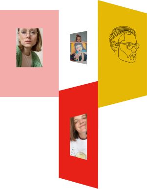

Hej! Vi er VNDU

Hej! Vi er VNDU
Når du bliver hjemme, gør du noget godt for samfundet. Så vi må finde nye måder at gøre det vi holder af.
Så for os, der elsker kunst, er VINDU dit digitale alternativ til gallerierne og museer. Det digitale udstillingsvindue huser både klassiske malerier og digitalt fremstillede værker.
Vi går netop efter at vise en bred vifte af samtidskunst for at favne mangfoldigheden i de følelser og udtryk, der er behov for at formidle i denne tid. Både i forhold til pandemien, men egentlig mere forstået på generationsniveau.
Vi er meget forskellige, men alle i tyverne og står sammen bag VNDU. Velkommen til.